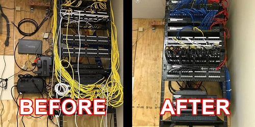

|
We provide the following cabling solutions:
Voice--cat 3: 4 pair, 12 pair, 25 pair, 50 pair, 100 pair.
Data Copper--cat 5, cat 5e, cat 6, cat 6a.
Fiber--single mode and multi-mode.
Coax--RG 6 and RG 59.
Paging--70 volt and 24 volt systems.
CCTV--IP and Coax.
Types of Cable We Install, Service and Support
Cable Installation
Moves
Adds
Changes
Repair
Infrastructure Design
MDF and IDF Design
Cable Placement and Support
Wire Management
Termination and Testing
Labeling and Mapping
Conduit Installation
Underground Cabling
Fiber Optic Cabling
Copper Cabling
Rack and Stack of Equipment
Equipment Racks and Patch Panels
Rack Clean-up
|

|